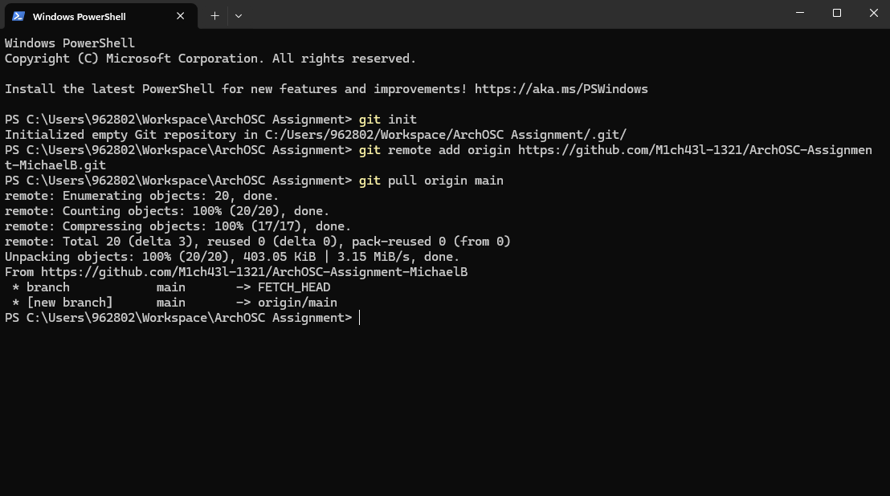
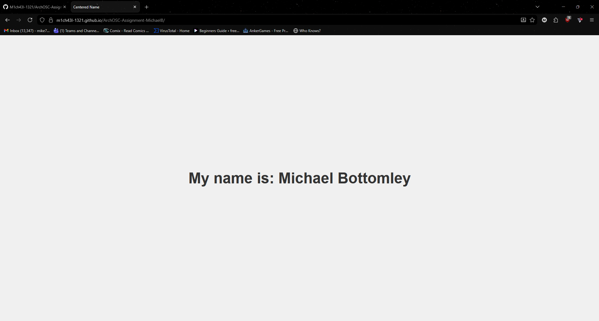
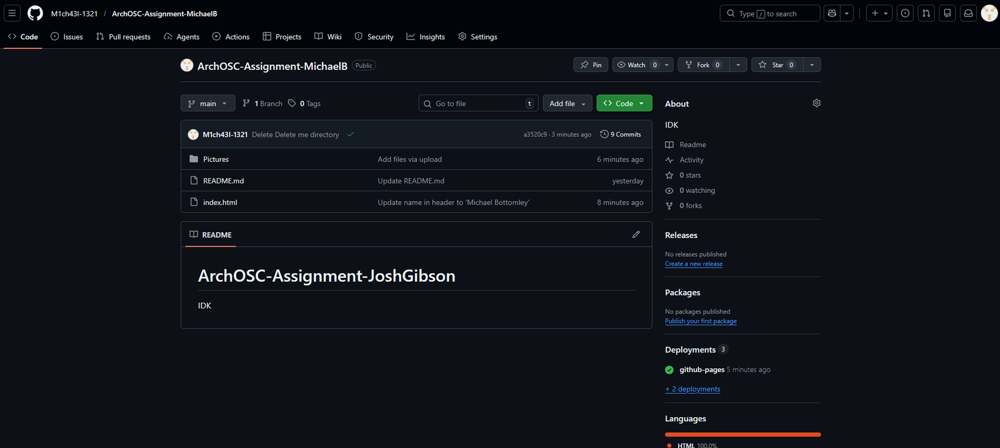
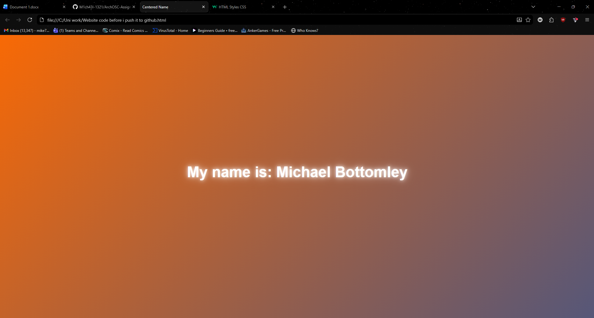
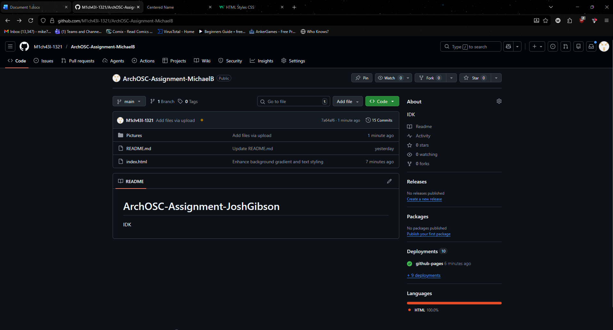

Screenshot 1
This screenshot shows the creation of my ArchOSC assignment folder.

This screenshot shows the creation of my ArchOSC assignment folder.
In this screenshot I used the terminal to create a local repository using the git init command.

In this screenshot I created a repository in GitHub by logging in and creating a new repo called "ArchOSC assignment Michael". I made the repo private.

In this screenshot I used git init, git remote add origin, and git pull origin main to link my GitHub to my local repository so I can push my work remotely.
This screenshot shows my completed website created in Visual Studio Code and saved inside my ArchOSC assignment folder.
This screenshot shows using git init.

In this screenshot I used git push -u origin main to push my work from my local repository to GitHub.
I added a hover effect to the title "My name is: Michael Bottomley" so it grows when hovered over.

I added a moving gradient background to improve the design of the website.
This screenshot shows my GitHub repository fully up to date with the new changes pushed.
This screenshot shows my GitHub Pages site displaying all changes after deployment from a branch.